AdventureWorks Sales Analysis
Tools: Power BI (Data Modelling, DAX, Visualization)
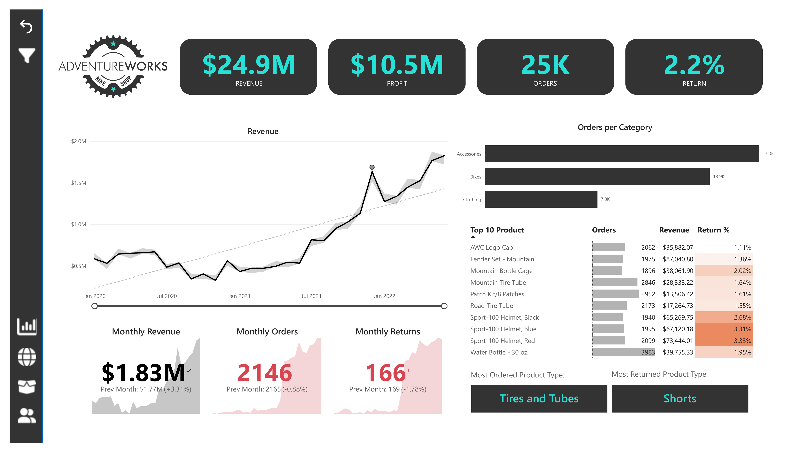
This project was built while completing the "Microsoft Power BI Desktop for Business Intelligence" course by Maven Analytics on Udemy, using the AdventureWorks Bike Shop dataset. Unlike the other projects here, the focus wasn't on cleaning messy data, but on the full Power BI workflow: connecting and shaping data, building a relational model, writing DAX measures, and designing an interactive dashboard.
The Dataset
AdventureWorks Bike Shop is a standard sample dataset covering sales, products, customers, and returns for a fictional bike company operating across the US, Canada, the UK, France, Germany, and Australia. The data was already clean and structured, making it well suited for practicing modelling and visualization rather than data cleaning.
Data Model
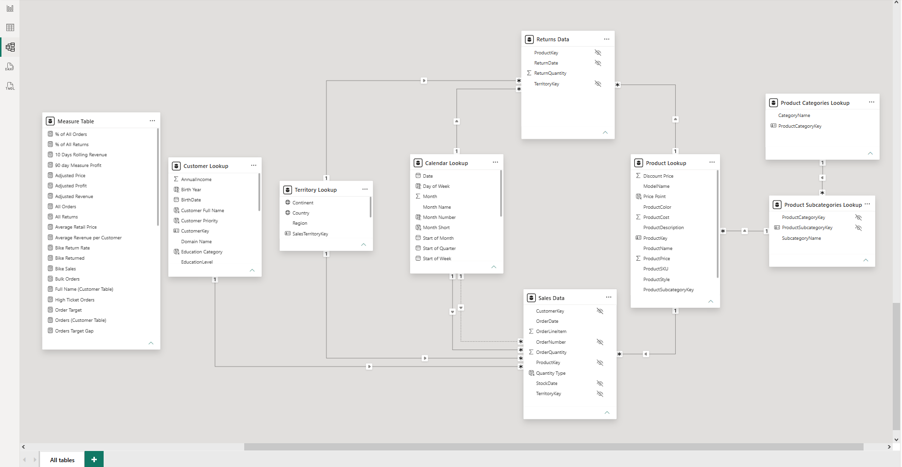
The dataset was connected and shaped using Power Query, then modeled into a relational structure: a set of transactional tables linked to supporting lookup tables holding descriptive attributes, similar in concept to the star schemas used in the other projects on this site.
The model consists of:
Sales Data, the main transactional table (one row per order line)Returns Data, transactional returns linked back to productsProduct LookupandProduct Categories Lookup, product details and categoryCustomer Lookup, customer demographicsCalendar Lookup, a date dimension supporting time intelligence
Visuals & Interactivity
The dashboard combines standard visuals with several of Power BI's more interactive and AI-powered features:
Core visuals:
- KPI cards and multi-row cards for headline metrics
- Gauge charts for target-vs-actual tracking
- Line, area, donut, and clustered bar charts
- Table and matrix visuals with conditional formatting
- Map visuals for geographic breakdowns
Interactivity & parameters:
- A numeric range parameter (price adjustment slider) driving downstream DAX measures
- A field parameter, letting users switch the metric shown in a chart (Orders, Revenue, Profit, or Return Rate) without duplicating visuals
- Slicers and custom action buttons for navigation
- Bookmarks, used to reset all slicers back to their default view
- Drillthrough from any product to a dedicated Product Detail page
- Custom tooltip pages, shown on hover instead of default tooltips
AI visuals:
- Trend line and anomaly detection on the monthly revenue chart
- Decomposition Tree for interactive, multi-dimensional breakdowns
- An automatically generated smart narrative summarizing trends
DAX & Visual Highlights
A closer look at how a few key components on the dashboard were built, from measure to visual:
1. KPI Cards
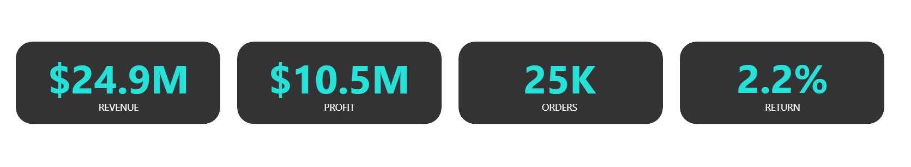
Total Revenue = SUMX('Sales Data', 'Sales Data'[OrderQuantity] * RELATED('Product Lookup'[ProductPrice]))
Total Profit = [Total Revenue] - [Total Cost]
Total Orders = DISTINCTCOUNT('Sales Data'[SalesOrderNumber])
Return Rate = DIVIDE([Total Return], [Total Orders])Visual: Built with standard Card visuals, formatted with a dark background, large bold values, and a small label underneath, then grouped together as a single row at the top of the page.
DAX: Each card is backed by a dedicated measure, aggregating the full Sales Data and Returns Data tables under whatever filters are active on the page.
2. Monthly Target
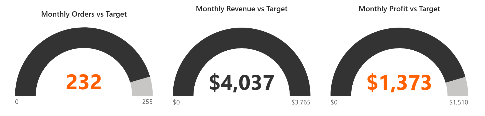
Order Target = [Previous Month Orders] * 1.1
Revenue Target = [Previous Month Revenue] * 1.1
Profit Target = [Previous Month Profit] * 1.1Visual: Gauge charts, with the actual measure as the value, the target measure as the target line, and the maximum set relative to the target so the gauge scales sensibly month to month.
DAX: Each gauge compares an actual measure against a target measure, with the target derived from a prior period rather than hardcoded.
3. Revenue Trend Chart
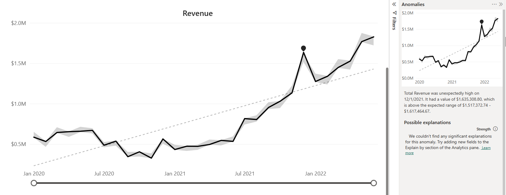
Visual: A line chart with the Analytics pane's trend line and anomaly detection turned on, which automatically fits a trend and flags months that deviate from the expected pattern, without any extra DAX required.
DAX: The chart itself only needs Total Revenue plotted against the date hierarchy from Calendar Lookup; the interesting part happens in the visual layer.
4. What-If Simulation
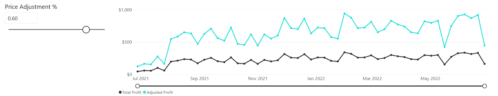
Price Adjustment % Value = 'Price Adjustment %'[Price Adjustment % Value]
Adjusted Price = [Average Retail Price] * (1 + [Price Adjustment % Value])
Adjusted Revenue = SUMX('Sales Data', 'Sales Data'[OrderQuantity] * [Adjusted Price])
Adjusted Profit = [Adjusted Revenue] - [Total Cost]Visual: A slider control lets the user set a price adjustment percentage, which flows into the DAX chain above. The chart below plots Total Profit against Adjusted Profit side by side, so the impact of the simulated price change is visible immediately, without needing to change any of the underlying data.
DAX: The what-if parameter is exposed as a single-column table, whose value scales the adjusted measures used throughout the Product Detail page.
5. Field Parameter Selector
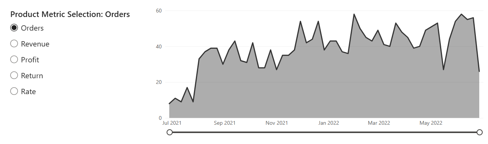
Product Metric Selection = {
("Orders", NAMEOF('Measure Table'[Total Orders]), 0),
("Revenue", NAMEOF('Measure Table'[Total Revenue]), 1),
("Profit", NAMEOF('Measure Table'[Total Profit]), 2),
("Return", NAMEOF('Measure Table'[Total Return]), 3),
("Rate", NAMEOF('Measure Table'[Return Rate]), 4)
}This reflects the standard pattern Power BI generates for a field parameter; the exact table wasn't recoverable from the model script.
Visual: A set of radio buttons lets the user choose which metric (Orders, Revenue, Profit, Return, or Rate) the chart below should plot, without needing five separate charts or duplicated visuals.
DAX: A field parameter generates its own small table behind the scenes, mapping each selectable option to the underlying column or measure it should display.
The Dashboard
1. Executive Summary
The Executive Summary page covers overall revenue, profit, orders, and return rate, with monthly trends and a category breakdown.
2. Map
The Map page shows revenue distribution by country, filterable by region.
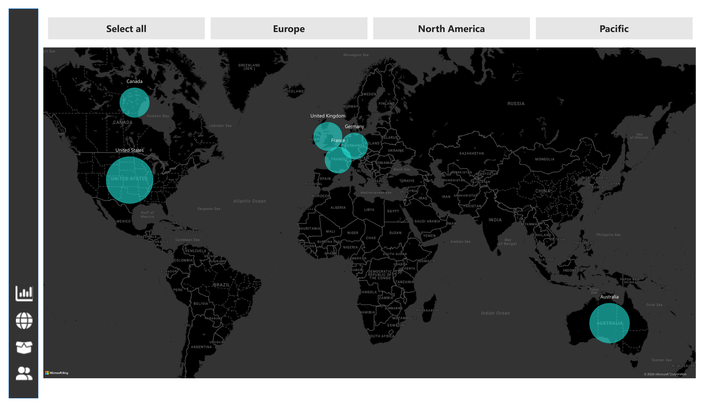
3. Product Detail
The Product Detail page supports drillthrough from any product, with a what-if parameter to simulate the impact of a price adjustment, and an automated narrative summary generated by Power BI.
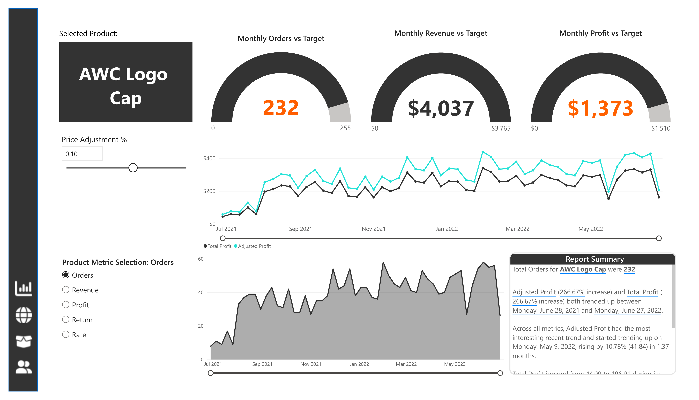
4. Customer Detail
The Customer Detail page breaks down customers by income level and occupation, with a searchable top-customer table.
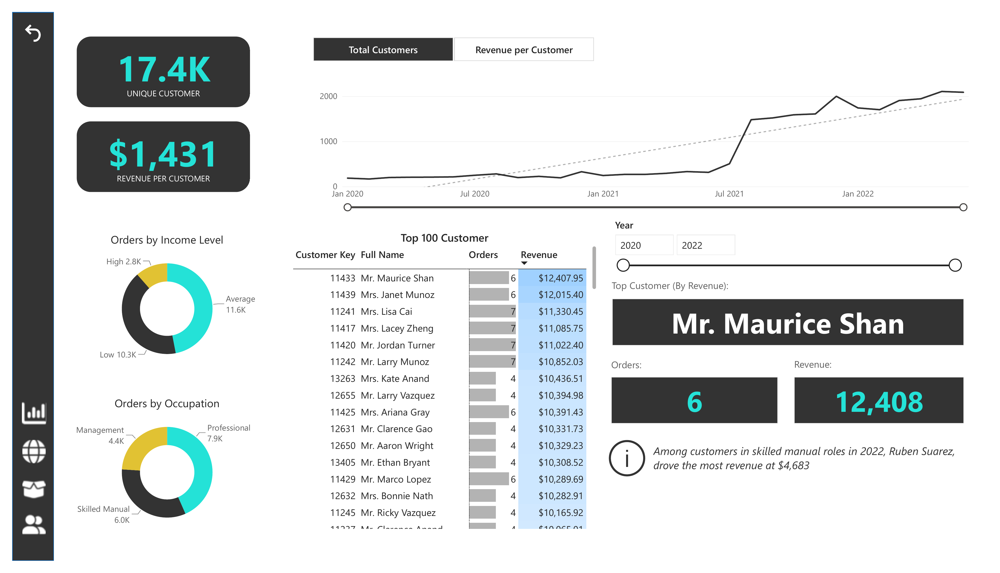
5. Decomposition Tree
The Decomposition Tree visual allows interactive root-cause analysis, breaking down aggregate metrics like Total Orders (25K) across hierarchical categories such as Category, Subcategory, and Product Name to uncover sales distribution drivers.
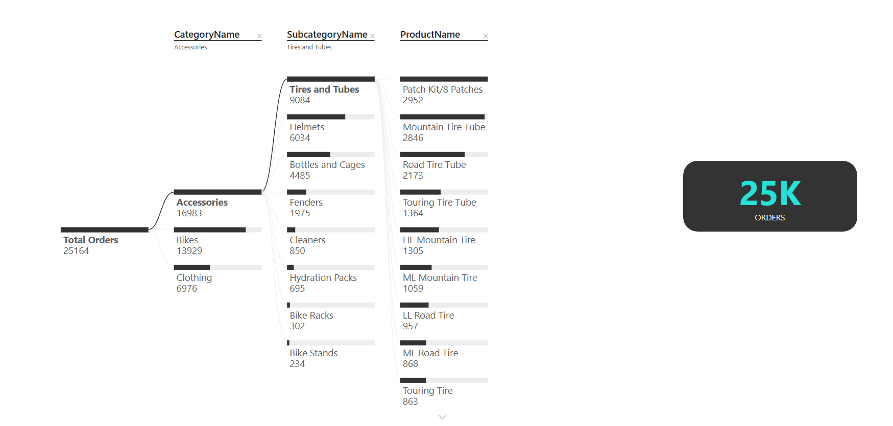
6. Key Influencers
The Key Influencers visual leverages Power BI's AI capabilities to automatically identify key drivers and customer segments (such as analyzing factors influencing homeownership likelihood and variables driving increases in average retail price).
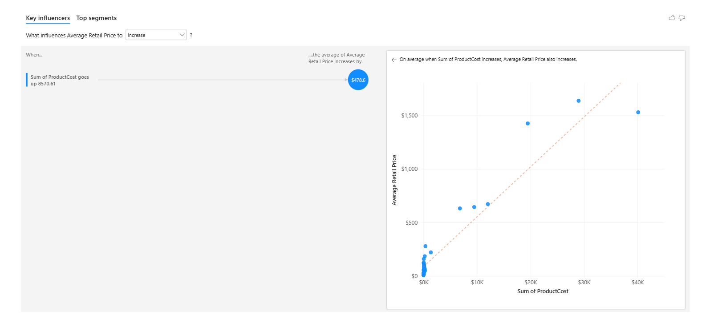
7. Data Documentation (Hidden)
The Data Documentation page acts as a data dictionary within the report, providing a searchable index of all measures, columns, tables, and relationships alongside their descriptions and DAX expressions.
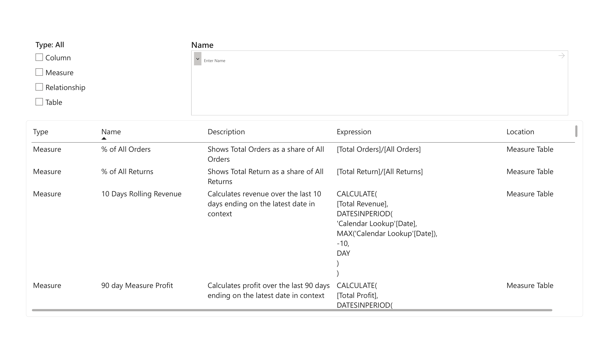
8. Tooltip Page (Hidden)
A custom Tooltip Page that appears when hovering over the Revenue Trend chart on the Executive Summary page, displaying key business KPIs alongside weekly order trends for quick contextual analysis.
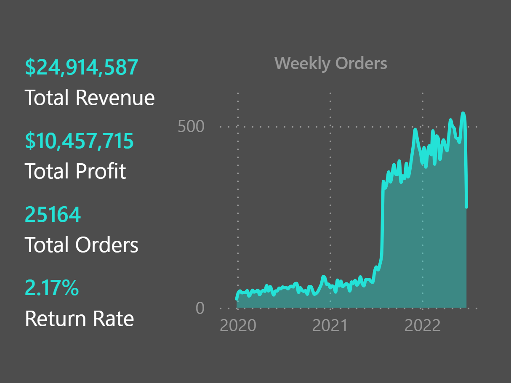
Key Insights
- Total revenue reached $24.9M with a 2.2% return rate
- Accessories had the highest order volume among all categories
- The United States generated the highest revenue by country
- Customers in the "Average" income bracket placed the most orders
View the Full Project
The complete project, including all Excel files and formulas, is available on GitHub.